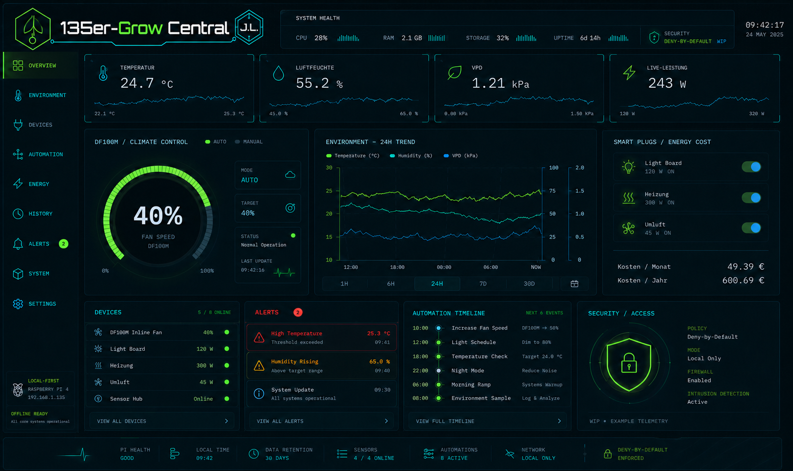

⌁
Local First
Die lokale Steuerung bleibt vor Ort verfügbar. Eine Internet- oder Cloud-Verbindung ist für die Kernidee nicht Voraussetzung.
LOKALE AUTORITÄT135er-Grow Central führt Geräte, Sensorwerte, Räume und Automationen in einer übersichtlichen Plattform zusammen. Die lokale Raspberry-Pi-Zentrale arbeitet eigenständig – bedient wird sie bequem per Browser, Smartphone oder Tablet.

Grow Central ist als kompakte, dauerhaft laufende Zentrale gedacht. Statt Lampen, Lüfter, Steckdosen, Sensoren und Kameras getrennt zu verwalten, werden die wichtigen Informationen und Abläufe an einem Ort zusammengeführt.
Die lokale Steuerung bleibt vor Ort verfügbar. Eine Internet- oder Cloud-Verbindung ist für die Kernidee nicht Voraussetzung.
LOKALE AUTORITÄTUnterschiedliche Hersteller und Übertragungswege werden in einer gemeinsamen Bedienlogik zusammengeführt.
EINHEITLICHE BEDIENUNGDie Oberfläche ist für Desktop, Tablet und Smartphone ausgelegt. Ein eigener Monitor am Raspberry Pi ist nicht nötig.
RESPONSIVEZeitpläne und Messwerte können später gemeinsam genutzt werden, um wiederkehrende Abläufe zuverlässig zu automatisieren.
REGELN & ZEITPLÄNEDer Fokus liegt auf verständlicher Einrichtung, einem klaren Gesamtstatus und Funktionen, die im Alltag wirklich helfen.
Netzwerk und Zugang werden beim ersten Start Schritt für Schritt eingerichtet.
SETUPGeräte und Messwerte lassen sich strukturiert den jeweiligen Bereichen zuordnen.
ORGANISATIONKlima, Gerätezustände und wichtige Entwicklungen werden übersichtlich dargestellt.
MONITORINGBeleuchtung, Lüftung und weitere Abläufe können zeit- oder zustandsabhängig gesteuert werden.
AUTOMATIONGeeignete USB-Kameras können für lokale Einblicke und die Dokumentation eingebunden werden.
KAMERAEin gemeinsamer Systemstatus hilft dabei, Verbindungen und Komponenten nachvollziehbar zu prüfen.
DIAGNOSEGrow Central wird herstellerübergreifend entwickelt. Der konkrete Funktionsumfang hängt vom jeweiligen Modell, der Firmware und dem Stand der Hardwarevalidierung ab.
Integrationspfade für AVM FRITZ!, TP-Link Tapo, Shelly, Tuya / Smart Life und Home Assistant.
Anbindungen für ausgewählte Geräte und Sensorwege von Mars Hydro und Spider Farmer befinden sich in Entwicklung und Prüfung.
Brücken für Zigbee2MQTT und klar definierte MQTT-Geräte erweitern die Plattform um zusätzliche Sensoren und Aktoren.
Der Seeed XIAO ESP32-C3 ist die feste Entwicklungsbasis für modulare Sensor-Nodes. I²C, RS485/Modbus, 1-Wire, Analog und digitale Wege werden getrennt validiert; Sensoridentität, Versorgung und Qualitätsstatus bleiben eindeutig.
Sensorik & Entwicklungs-BOMDer native Bodensensor lässt sich am Pi einrichten, einem Raum zuordnen und in der Sensorhistorie anzeigen. Der bestätigte Teiltest gilt für Pi 4, XIAO ESP32-C3 und HW-390 mit Firmware 0.4.1 und den dokumentierten Korrekturen.
Der Assistent führt durch Firmware, WLAN und Raumzuweisung. Individuelle Sensorzugänge, TLS und signierte Identitätsprüfung schützen die lokale Verbindung.
Eine eigene Kachel und Historienspalte zeigen Bodenfeuchte getrennt von Luftfeuchte. Der Wert ist eine relative Referenz und kein exakter Wassergehalt.
Trocken-/Nassreferenzen lassen sich per USB speichern. Gießgrenzen müssen anschließend am verwendeten Substrat geprüft werden. Ein Kalibrierungsdialog ist noch in Planung.
Sensor-AnleitungDer neue Image-Candidate Build 375 enthält Firmware 0.4.1 und die Korrekturen. Der bestätigte Sensortest erfolgte zuvor auf einer aktualisierten Pi-4-Installation; die vollständige Prüfung des neuen Images, anderer Hardwareklassen und der Bewässerungsgrenzen steht noch aus.
Grow Central erkennt die Hardwareklasse und passt den Betrieb an die verfügbaren Ressourcen an. Für neue Installationen ist ein Raspberry Pi 4 oder 5 vorgesehen.
Weiterhin als ressourcenschonende Legacy/Lite-Klasse vorgesehen.
Legacy/LiteEmpfohlene Standardplattform für eine ausgewogene Grow-Central-Installation.
Full SupportZusätzliche Leistungsreserve für größere Installationen und künftige Funktionen.
PERFORMANCESensoren werden lokal am XIAO-Node angebunden. Der Node kommuniziert per WLAN/MQTT mit Grow Central. In großen Anlagen werden viele Nodes zonenweise verteilt, statt Sensorkabel quer durch Hallen zu ziehen.
SHT45, SCD41, Atlas-EZO, INA226, ADS1115 und weitere kurze Verbindungen im Node-Bereich.
SEN0604 Soil, SEN0641 PPFD, Wetterstation und industrielle Sensorik über Modbus RTU.
DS18B20, Durchflussimpulse, HX711 und definierte digitale Erweiterungen.
Die Auswahl trennt bestätigte Herstellerfunktionen von noch zu validierenden Integrationen. Eine Busadresse allein gilt nicht als Sensoridentität.
| Messaufgabe | Referenz | Anbindung | Status |
|---|---|---|---|
| Lufttemperatur / RH | Sensirion SHT45 | I²C | Herstellerfunktion bestätigt |
| CO₂ | Sensirion SCD41 | I²C | Herstellerfunktion bestätigt |
| Boden: Feuchte / Temp / EC / pH | DFRobot SEN0604 | RS485 / Modbus RTU | Register & Modbus dokumentiert |
| PPFD / PAR | DFRobot SEN0641 | RS485 / Modbus RTU | Register & Modbus dokumentiert |
| Wassertemperatur | DS18B20 | 1-Wire | 64-Bit Hardware-ID |
| Reservoir pH | Atlas Scientific EZO-pH | I²C / UART | isolierte Ausführung vorgesehen |
| Reservoir EC | Atlas Scientific EZO-EC K1 | I²C / UART | isolierte Ausführung vorgesehen |
| Gelöster Sauerstoff | Atlas Scientific EZO-DO | I²C / UART | Hydro / Aquaponik |
| Wasserstand | 4–20-mA Tauchdrucksonde | 4–20 mA → ADC | Konverter erforderlich |
| Durchfluss | DFRobot SEN0550 | Pulse / GPIO | Pegelwandler/Isolation erforderlich |
| Gewicht | Load Cell + HX711 | Digital | optional |
| Leaf Temperature | Melexis MLX90614 | I²C | Montage/FOV zu validieren |
| Leaf Wetness | SenseCAP Industrial Leaf Wetness | RS485 / Modbus RTU | Pro / Enterprise |
| Wetterstation | DFRobot SEN0657 / SenseCAP ONE | RS485 / Modbus RTU | Pro / Enterprise |
| Differenzdruck | Sensirion SDP810-500Pa | I²C | Lüftung / Filter |
Die Liste deckt I²C, RS485, Analog, 4–20 mA, 1-Wire, Pulse, GPIO und Diagnose ab. AliExpress-Links sind bewusst Suchlinks, damit einzelne Händlerwechsel die Stückliste nicht sofort in digitales Geröll verwandeln.
| # | Bauteil | Menge | Richtpreis | Zweck | AliExpress |
|---|---|---|---|---|---|
| 1 | MB102 Breadboard 830 Kontakte | 2 | 7,00 € | Versuchsaufbau | Suchen |
| 2 | XIAO Breakout / Expansion Board ohne MCU | 1 | 5,00 € | Pins sauber herausführen | Suchen |
| 3 | Dupont M-M / M-F / F-F Set | 1 | 4,00 € | flexible Testverkabelung | Suchen |
| 4 | Breadboard Jumper Wire Kit | 1 | 4,00 € | saubere feste Längen | Suchen |
| 5 | isoliertes UART/TTL ↔ RS485 Modul, 3,3 V, Auto Direction | 2 | 14,00 € | Modbus-Testbus + Reserve | Suchen |
| 6 | ADS1115 16-Bit 4-Kanal ADC Modul | 2 | 5,00 € | Analog- und 4–20-mA-Auswertung | Suchen |
| 7 | TCA9548A 8-Kanal I²C Multiplexer | 2 | 4,00 € | gleiche I²C-Adressen / Bussegmentierung | Suchen |
| 8 | MCP23017 16-I/O Expander | 1 | 2,50 € | zusätzliche GPIOs | Suchen |
| 9 | HX711 Load Cell Amplifier | 2 | 3,00 € | Gewicht/Wägezellen testen | Suchen |
| 10 | 4–20-mA Receiver / Current-to-Voltage Modul | 2 | 7,00 € | Industriesensorik | Suchen |
| 11 | MP1584EN Step-Down Modul | 5 | 4,00 € | 12 V → 5 V / Testspannungen | Suchen |
| 12 | JST-XH 2,54-mm Stecker-Set 2–6-polig | 1 | 6,00 € | steckbare Sensorverkabelung | Suchen |
| 13 | JST-XH vorkonfektionierte Kabel | 1 | 5,00 € | Prototyping ohne Einzelcrimpen | Suchen |
| 14 | Schraubklemmen 5,08 mm, gemischt | 1 | 5,00 € | 12 V / GND / RS485 A/B | Suchen |
| 15 | 2,54-mm Stift- und Buchsenleisten | 1 | 3,00 € | Module steckbar aufbauen | Suchen |
| 16 | Widerstandssortiment | 1 | 4,00 € | Pull-ups, Terminierung, Pegelanpassung | Suchen |
| 17 | Kondensatorsortiment | 1 | 4,00 € | Entstörung / Versorgung | Suchen |
| 18 | USB Logic Analyzer 8 Kanal / 24 MHz | 1 | 8,00 € | I²C, UART, 1-Wire, Pulse debuggen | Suchen |
| 19 | Krokoklemmen / Testleitungen | 1 | 4,00 € | Mess- und Prüfaufbau | Suchen |
| 20 | USB-C Datenkabel | 1 | 4,00 € | XIAO Flash / Debug | Suchen |
| 21 | Aderendhülsen + kleine Leitungen | 1 | 6,00 € | saubere Versorgung und Busverdrahtung | Suchen |
Für ein Netzteil an 230 V wird bewusst kein namenloses AliExpress-Netzteil als Referenz festgelegt. Dafür ist ein Marken-Netzteil mit nachvollziehbarer Dokumentation vorgesehen.
Grow Central trennt technische Identität, Standort, Messwert und Qualitätsstatus.
Busadresse ist kein Identitätsbeweis. Hardware-ID wird genutzt, wenn der Sensor eine liefert; zusätzlich führt Grow Central eine eigene UUID.
INA226/ADC-Messpunkte für Node- und Sensorbus-Versorgung, Brownout-Erkennung und Diagnose von Power-Fehlern.
GOOD, STALE, INVALID, BUS_ERROR, POWER_ERROR und OFFLINE steuern, ob Automationen weiterlaufen oder sicher pausieren.
Die Kamera wird als Belichtungsmesser genutzt. Aus ISO, Belichtungszeit und Blende werden Lux, PPFD und DLI näherungsweise berechnet. Für präzise PAR-Messungen bleibt ein kalibriertes Quantum-Meter die Referenz.
Unsigned IPA für eigene Signierung mit Sideloadly, AltStore oder SideStore. Entwickelt für iOS/iPadOS 16 und neuer.
iOS Sideload ZIP herunterladenZIP entpacken und die enthaltene IPA anschließend mit Sideloadly, AltStore oder SideStore selbst signieren.
Native Kotlin/Jetpack-Compose-App mit Camera2-Messung. Unterstützt Smartphones und Tablets ab Android 8.
Android APK ZIP herunterladenZIP entpacken und die enthaltene APK installieren. Als App-Icon wird das offizielle Grow-Central-Projektlogo verwendet.
Android-Quellcode und das iOS-Xcode-Projekt liegen im öffentlichen Grow-Central-Repository und werden reproduzierbar über GitHub Actions gebaut.
Quellcode auf GitHubGrow Central wird vollständig Open Source entwickelt und auf realer Raspberry-Pi-Hardware getestet. Quellcode, Dokumentation und veröffentlichte Builds sind über das öffentliche Projekt-Repository verfügbar. Teststände bleiben als CANDIDATE gekennzeichnet, bis ihre Funktion auf der jeweiligen Hardware geprüft wurde.
Lokale Zentrale, responsive Oberflächen und Geräteintegration werden gemeinsam weiterentwickelt.
AKTIVEin Build wird erst nach realen Tests auf der jeweiligen Hardwareklasse als validiert eingestuft.
IN PRÜFUNGQuellcode und Dokumentation sind öffentlich verfügbar. Veröffentlichte Images und App-Pakete findest du in den Projekt-Releases; die jeweilige Beschreibung nennt den Test- und Freigabestatus.
OPEN SOURCENein. Grow Central ist für den Betrieb ohne eigenen Desktop ausgelegt und wird über andere Geräte im Netzwerk bedient.
Die Kernidee ist Local First. Eine Cloud kann zusätzliche Fern- und Verwaltungsfunktionen ergänzen, bleibt aber optional.
Noch nicht. Der Funktionsumfang hängt von Modell und Firmware ab. Kritische Schreibfunktionen werden erst nach sicherer Validierung freigegeben.
Quellcode und Dokumentation findest du im öffentlichen Repository. Verfügbare Downloads stehen unter Releases. Beachte den jeweiligen Teststatus; ein CANDIDATE ist noch kein hardwarevalidierter Build.